Deepfake Detection System Report
Publication-style summary of the fine-tuned XceptionNet training pipeline, deployment stack,
evaluation metrics, explainability outputs, and verification artifacts generated for the
deepfake-detection-XceptionNet-main project.
Abstract
This system combines a fine-tuned XceptionNet backbone, MTCNN face localization,
training-consistent preprocessing, Grad-CAM, LIME, metadata inspection, and a FastAPI plus React
dashboard for image and video deepfake analysis. The final model was trained on the local
Dataset directory using an identity-grouped split to reduce leakage and integrated back
into the deployment runtime with the same preprocessing used during fine-tuning.
Core Outcome
The fine-tuned model achieved 95.37% test accuracy, 95.02% test F1-score, and 0.9919 test AUC. The representative fake-image verification sample was classified as FAKE at 99.98% confidence, while the representative fake-video verification run reached a 88.52% fake-frame ratio.
Deployment Snapshot
| Backbone | xception |
|---|---|
| Image size | 299 |
| Normalization | ImageNet statistics |
| Face detector | mtcnn |
| Image threshold | 0.85 |
| Video ratio threshold | 0.40 |
Dataset and Split Strategy
Training used an identity-grouped split to reduce subject overlap across train, validation, and test sets. This is especially important in deepfake detection because identity leakage can inflate performance estimates without improving generalization.
| Train identities | 699 |
|---|---|
| Validation identities | 149 |
| Test identities | 151 |
| Train samples | 102,211 |
| Validation samples | 9,240 |
| Test samples | 8,986 |
| Dropped cross-split fake frames | 71,113 |
| Dropped cross-split fake groups | 2,226 |
Training Configuration and Results
Configuration
| Batch size | 32 |
|---|---|
| Epochs | 12 |
| Frozen epochs | 2 |
| Learning rate | 0.0001 |
| Weight decay | 0.0001 |
| Patience | 4 |
| Weighted sampler | True |
| AMP | True |
| Training time | 521.54 minutes |
Held-Out Performance
| Validation accuracy | 97.22% |
|---|---|
| Validation AUC | 0.9942 |
| Test accuracy | 95.37% |
| Test precision | 94.59% |
| Test recall | 95.45% |
| Test F1-score | 95.02% |
| Test AUC | 0.9919 |
| Test loss | 0.1123 |
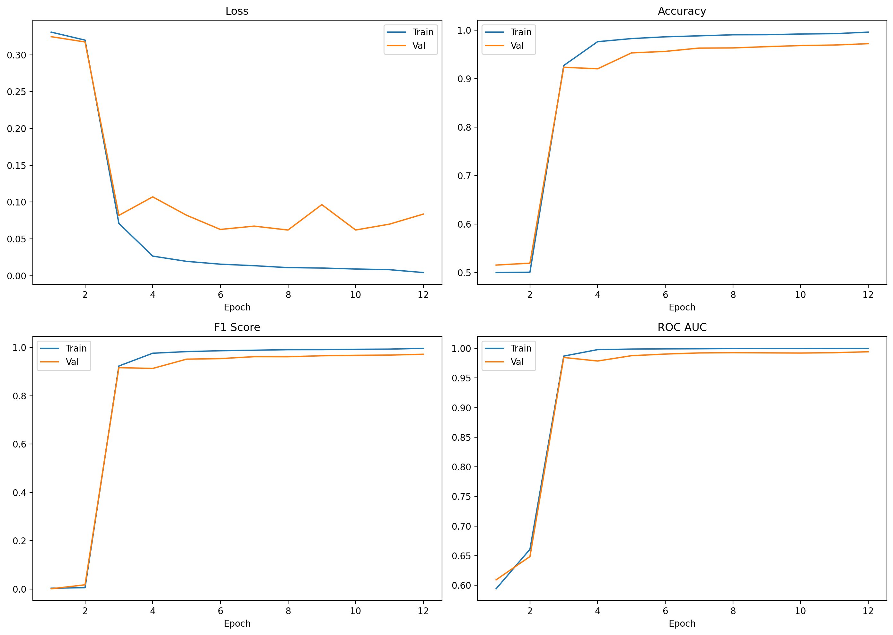
Training and validation evolution across the full fine-tuning run.
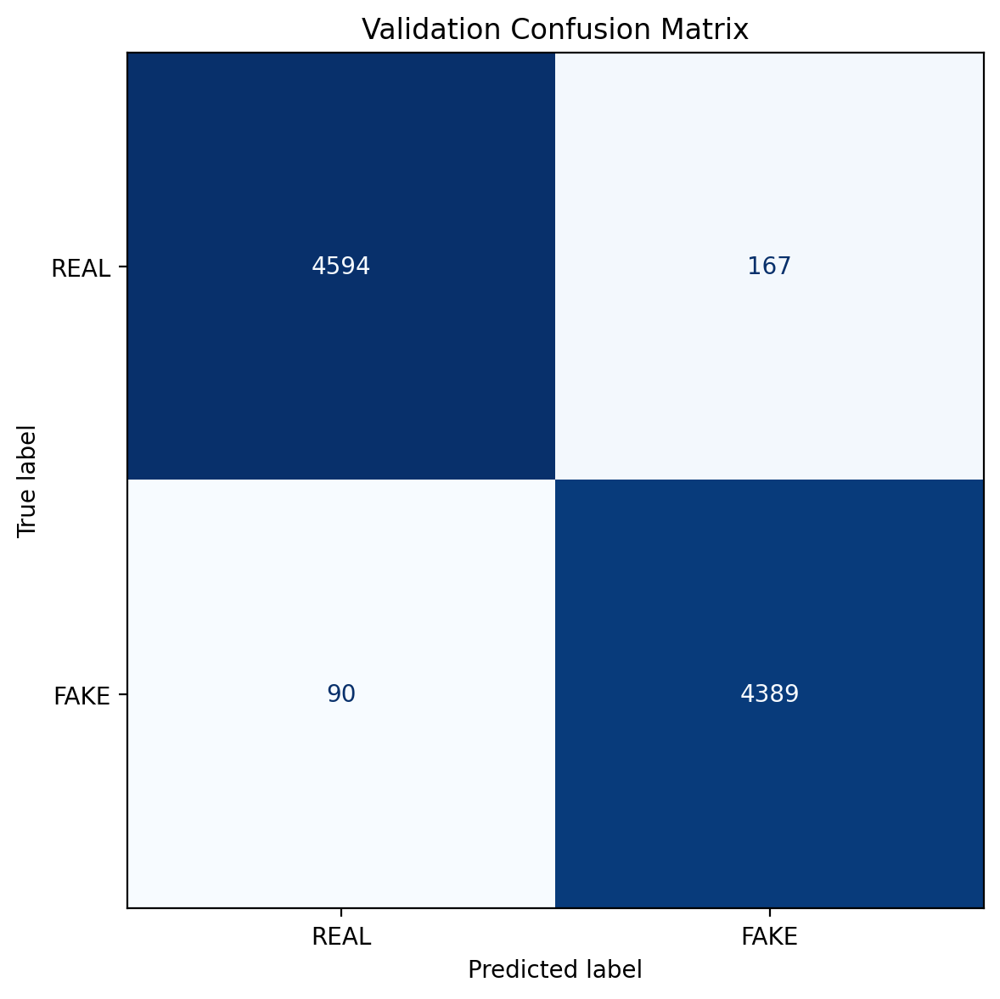
Held-out validation confusion matrix.
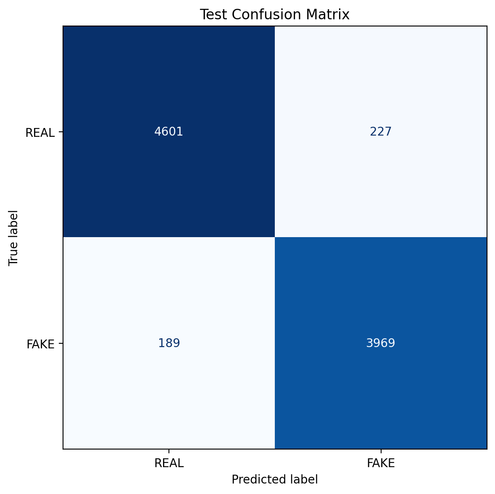
Held-out test confusion matrix.
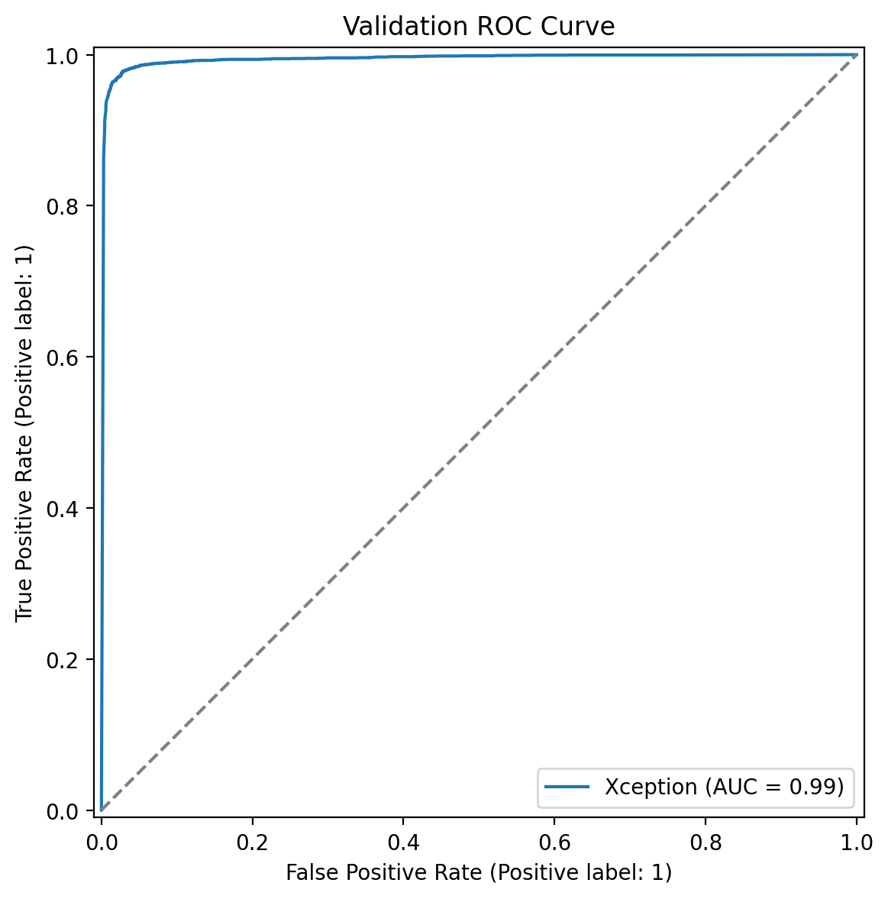
Validation ROC curve.
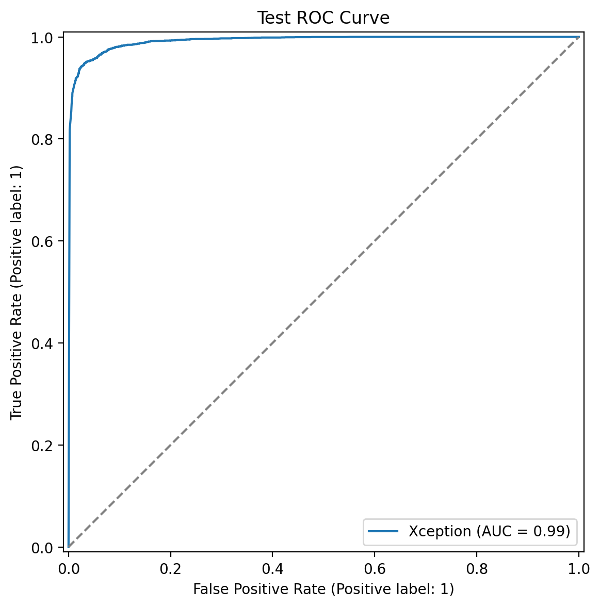
Test ROC curve.
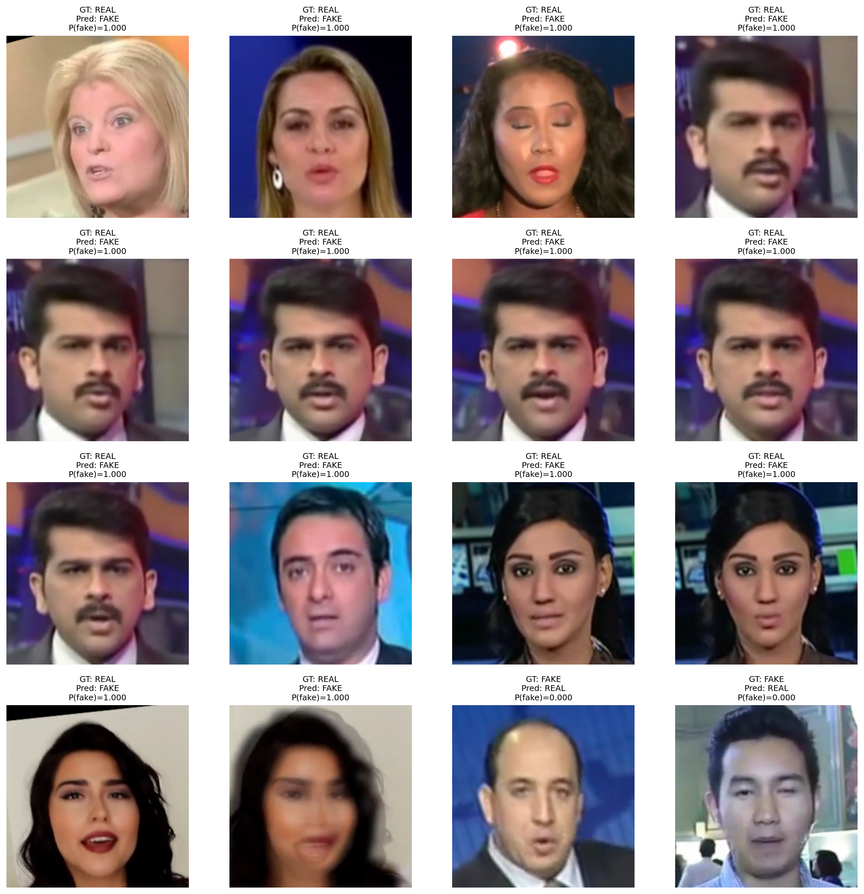
Representative difficult validation examples.
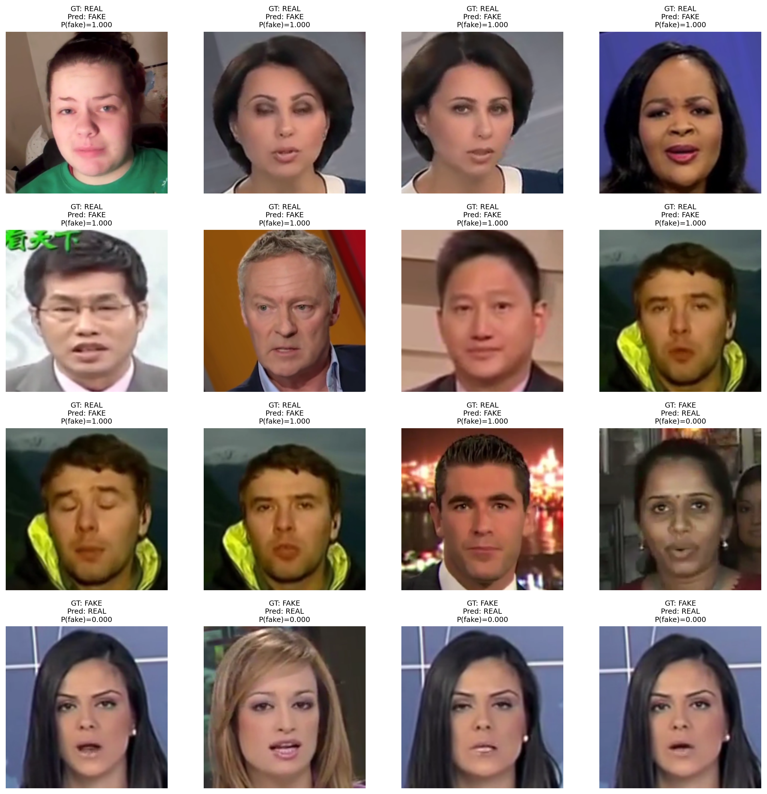
Representative difficult test examples.
Inference Stack and Application Design
Backend
- FastAPI service with health, image, batch, video, WebSocket, and PDF-report endpoints.
- Xception model loaded from the fine-tuned
best_model.ptcheckpoint. - Training-consistent preprocessing: resize to
299x299with ImageNet normalization. - MTCNN-only face detection with a slightly expanded crop margin for fuller facial coverage.
Frontend
- Image, video, batch, and comparison workflows.
- Interactive threshold sliders for image/frame and video ratio decisions.
- Video decision trace, timeline, trigger-frame chips, and suspicious-frame gallery.
- Session history, explainability panels, and PDF export support.
Component Verification
| Model class | Xception |
|---|---|
| Parameter count | 20,809,001 |
| Trainable parameters | 20,809,001 |
| Detector confidence | 99.86% |
| Image verification result | FAKE @ 99.98% |
| Landmark count | 5 |
| Metadata flags | No EXIF metadata present |
| Video fake-frame ratio | 88.52% |
| Video fake-frame count | 54 / 61 |
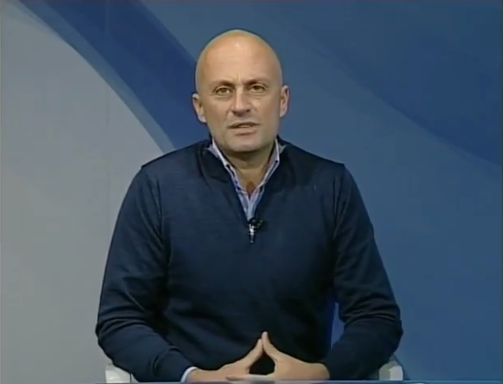
Original image used to verify the detector.
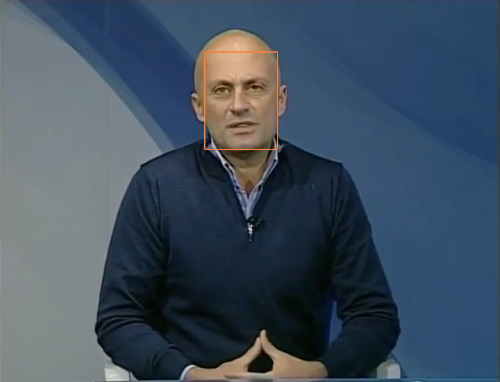
Detected face bounding box overlay.
Crop passed to the classifier after adding margin.
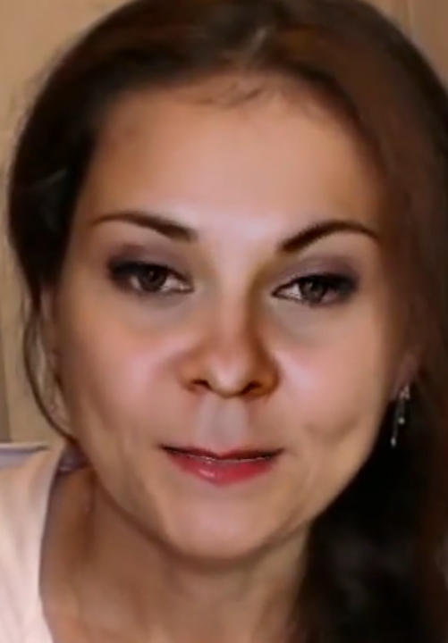
Input crop used to generate attribution maps.
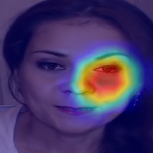
Saliency map over the manipulated face.
Superpixel-level explanation of the classifier decision.
Five-point facial landmark overlay.
First high-confidence fake frame from video verification.
Face crop for the first high-confidence fake frame.
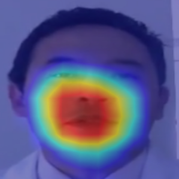
Grad-CAM explanation for the first suspicious frame.
Second high-confidence fake frame from video verification.
Face crop for the second high-confidence fake frame.
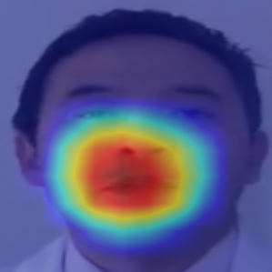
Grad-CAM explanation for the second suspicious frame.
Third high-confidence fake frame from video verification.
Face crop for the third high-confidence fake frame.
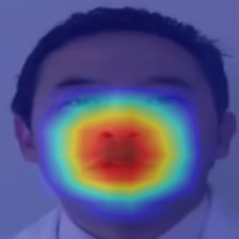
Grad-CAM explanation for the third suspicious frame.
Discussion and Future Work
The most important practical lesson from this project was that deployment fidelity matters almost as much as training quality. Once the backend was updated to load the new fine-tuned checkpoint, use the same preprocessing as the training pipeline, and rely on MTCNN-only cropping, the model behavior aligned much more closely with the expected results. The final stack is now suitable for demos, project reports, and further experimentation.
Future improvements should focus on threshold calibration from validation distributions, temporal modeling for more robust video decisions, multi-face handling, and broader external benchmarking against unseen manipulations.
Bundled Artifact Paths
artifacts/final_report.jsonartifacts/split_summary.jsonartifacts/config.jsonartifacts/model_loader.jsonartifacts/face_detection.jsonartifacts/image_prediction.jsonartifacts/explainability.jsonartifacts/forensics.jsonartifacts/landmarks_result.jsonartifacts/video_pipeline.json